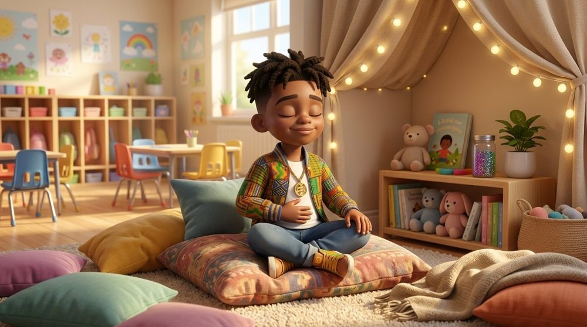

K–2 Behavior Toolkit · Topic 2 of 12 · Skills I can use
CALM CORNER
get calm, come back
I get calm. Then I come back to learn.
ESMe calmo. Luego regreso a aprender.
KRMwen kalme m. Apre sa, mwen retounen pou m aprann.

Start the meeting as usual
This topic replaces the lesson content only.
Watch
The Calm Corner song
How to use the song
- Play it at the start as a preview of today's learning. It runs about 1 minute 26 seconds.
- Captions are on screen so students can read along. The echo parts are in yellow.
- The deck has a Play the song button on slide 1, so you can play it from the deck.
- Replay it during the week as a transition or a reminder.
Teach
Student deck and teacher guide
Post
Posters
Practice
Centers and Tier 2
Center kit
Sort mat and 8 picture cards, sequencing mat and cards, role-play cards, calm corner step strips, and a coloring page.
Mini book
A read-together story for students who need more practice getting calm and coming back. Read it one on one, then practice at the real calm corner.
Families
Family half-sheets
Family half-sheet
What the calm corner is, what we say at school, and three things to try at home. One page per language, two half-sheets per page.
Download everything
All files for this topic in one ZIP, including the song. Keep the deck and the song in the same folder.